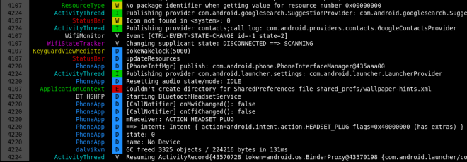

程式競賽小技巧 - Binary Search
最近在 Kaif 開了一個 程式競賽 區，打算在上面提一些我在競賽中學到的技巧， 不過既然我有一個很久沒動筆的 Blog，不如就直接寫在這裡，再把連結貼到 Kaif 吧。
Binary Search 在程式競賽中，指的不是用來檢查元素在 sorted list 中位置的方法， 而是一種解題技巧。適用 Binary Search 的題目，通常會有兩個特性：
-
目的是要求出某個變數 "滿足某個條件" 的最小值， 且變數超出此值後也都會繼續滿足此條件。
-
無法使用有效率的方法計算出答案，但只要給變數任意的值， 都能容易的判斷出是否滿足條件。
在針對整數域時，我的 code 會像是這樣：
int lower = 0; int upper = 1000000; // 某個大到一定滿足條件的值 while (lower < upper) { int mid = (lower+upper)/2; boolean satisfied = check(mid); // 將 mid 代入檢查是否滿足 if (satified) upper = mid; else lower = mid+1; }
離開 while 迴圈時，lower 會與 upper 相等，並且就是所求答案。
那麼在實數域會有什麼不同呢？這就是我覺得有意思的地方了。
由於浮點數精確度的關係，是有可能發生 mid 等於 lower 的情況，導致形成無窮迴圈。
好在我們知道比較浮點數應該要允許一點誤差。通常我的習慣是加上一個常數
Є，於是 code 會長這樣：
public static final double EPSILON = 1e-8; while (lower+EPSILON < upper) { // ... }
使用這個技巧，只要你選擇了 "適當" 的 Є，程式就會是可以正確運行的。
但什麼情況下會出問題呢？
當你的 lower 很大，而 Є 很小時，同樣有可能發生 lower+EPSILON==lower 的情況。
那有沒有更好的方法？看看以下的 code 吧。
double lower = 0.0; double upper = 1e30; for (int times=0; times<50; times++) { // 注意這行 double mid = (lower+upper)/2; boolean satisfied = check(mid); if (satisfied) upper = mid; else lower = mid; }
結果就是什麼都不要管，固定跑個足夠次數就好。:p
我自己習慣跑 50 次，但也看過其他參賽者使用 40, 100, 200 次。
使用 Graphviz 繪製網路拓樸
自從離開了 Android 產業之後，我加入了一間與網路服務相關的新創公司。 在工作內容上，經常會需要理解對方的網路環境，而解決這個問題最好的方法， 就是事先準備好一份網路拓樸並歸檔。
Requirements
因此，接下來的任務就是尋找一個適合我們的 Diagram Editor，以下是我們的需求：
- 跨平台：公司內三種作業系統都有人使用，需要選擇一個各種平台上都能使用的檔案 格式，開放格式尤佳。
- 簡單：單就繪圖操作的部份，希望是連非技術人員也能夠使用。
- 容易修改：當網路架構有些微變動時，希望能夠很容易的完成修改，不需要大量的微 調各節點的位置。
- 版本控制：不管是使用什麼格式，版本控制都是必要的，但 binary 檔案管理起來總 是比較麻煩。
其實不難看出來，會列出這種需求，我根本就只是想內定 Graphviz 嘛！確實如此， 但在 簡單 這個項目上，Graphviz 卻似乎是最差的選擇，不把這個問題處理好，我看 大概很難順利將 Graphviz 導入公司。
我們暫且先不論 Graphviz 是否足夠簡單，還是先把環境準備好，實際畫張圖來看看。
Installation
其實在我進行 survey 內定之前，就已經先透過 Google 找了一遍，出乎意料
的只找到了一篇：Network topology with graphviz。
不過有總比沒有好，試著依樣畫葫蘆跑一遍，結果卻是 dot 執行時出現錯誤。查了才知
道，原來 Graphviz 到了版本 2.29 之後 node 才開始支援 image 屬性。但我所使用
的 Ubuntu 12.04 的套件庫中的版本只到 2.26，且一直到 14.04 才開始使用更新的版本。
這種類似的事情遇多了，最簡單的方法就是找個現成的 PPA，通常我會從官方維護的開始
找起，於是：
sudo apt-add-repository ppa:gviz-adm/graphviz-dev
接著要安裝時，apt 卻又出現錯誤：
graphviz : Depends: libgraphviz4 (>= 2.18) but it is not going to be installed
好在 Ask Ubuntu 上早有解答，照著做即可：
sudo apt-get update sudo apt-get remove libcdt4 libpathplan4 sudo apt-get install graphviz
Images
裝好新版本的 Graphviz 後，還需要用來表示各種節點的圖片，這裡我所選擇的是 Cisco 免費提供的 icons。
Cisco 提供的圖片格式是 JPEG，而根據 Graphviz 的文件，應該是有支援 JPEG，
但不知道是哪裡出了問題，我並沒有辦法順利使用，所以我是自行轉成 PNG。
Results
最後的結果就是下圖：

而上圖對應的 dot 原始檔如下：
graph G {
node [shape=none, height=1.2]
rankdir=LR
// Modems
node [labelloc="b", image="icons/modem.png"] {
"Modem 1"
"Modem 2"
}
// Routers
node [labelloc="b", image="icons/atm router.png"] {
"Router"
}
// Switches
node [labelloc="b", image="icons/atm switch.png"] {
"Switch"
}
// Access Points
node [labelloc="b", image="icons/wireless router.png"] {
"AP 1"
"AP 2"
}
// Sub-networks
node [labelloc="c", image="icons/cloud.png"] {
"WAN"
}
// Relationships
"WAN" -- {"Modem 1", "Modem 2"} {
{"Modem 1", "Modem 2"} -- "Router" {
"Router" -- "Switch" {
"Switch" -- {"AP 1", "AP 2"}
}
}
}
}
如果是曾經接觸過 dot 的讀者，或許會覺得我所使用的語法很怪異，因為原始碼中的
那些大括號與縮排，在 dot 語言中其實是完全沒有作用的，我這樣寫的目的，純粹是
想降低使用 Graphviz 繪製網路拓樸的學習難度。以下是我的一些考量：
- 將 宣告 與 建立關聯 的部份完全區分開，規定關聯一定要寫在最後面。
- 將節點宣告的概念，由原先的 修改後續 node 的 default attributes， 變成簡單的 集合中的元素。
- 由於我們所需要繪製的網路圖只會是樹狀結構，使用縮排可以更方便閱讀。
Conclusion
我們實際的使用方式是將網路拓樸紀錄在 Redmine 的 wiki 內， 而這裡有一個 plugin，能夠直接將 wiki 中的純文字的 dot，在預覽和儲存後直接以 轉換後的圖片顯示，實在是方常方便。
然而使用 Graphviz 有其極限，對於複雜的網路拓樸，或著對美觀極度要求時，使用其他 的軟體搭配仍然有其必要。
Android Java 層 Debug 工具介紹 (2)
在系列文的第一篇文章中，我已經介紹過 Log Viewer 與 Profiler，而這次所要介紹的內容則是 Debugger，以及一些 Reverse Engineering 工具。 那麼，就先從 Debugger 開始吧。
Remote Debugging
對於 Android App 開發者來說，在 Android 上 debug 是在自然不過的事了。
您只需要準備好專案，點一下 Debug 按鈕，IDE 就自動進入 debug 模式，接著無論是
下中斷點、單步執行，或是查看變數內容……等，一切皆任君差遣，但……
- 如果不是透過 IDE 啟動的程式執行到一半，出現了預期之外的狀況，這時您還能不 能透過 Debugger 進行 debug 呢？
- 若是執行的程式沒有建立專案，甚至沒有 Source Code 時，Debugger 還能有所作為嗎？
- 又或著是系統廠 RD 最想要的功能，能不能對系統 Service 進行 debug？
上述三個問題的答案都是 YES，當然其中也會有一些前提必須滿足，像是 debug 的對象必 須具有 debuggable flag，或著手機本身 image 為 Engineer build。在前一篇文章中我也 提過了，不需要太擔心這個條件無法滿足，因為下一個章節就會來解決這件事。:)
我在這裡所要介紹的技巧，其實就和對 App 進行 debug 本質上是一樣的，只不過操作的 過程比較手動一些。我會以 Eclipse 進行以下的示範，但其實使用任何一款支援 Remote Debugging 的 debugger 皆可，甚至連 Android plugin 都不需要安裝。
1. Select debug port
首先到任何一個看得見這畫面的地方，不管是 Eclipse 內建的 DDMS 也好，或著獨立的 Android Device Monitor 也好，總之只要是這個畫面都好。
對著想要進行 debug 的 process 點一下。在點選之前，最後一欄的文字本來會是 8600
之類，但點選之後就會變成 8600 / 8700。
這些數字是其實是 Port Frowarding 所開在本機的 port，透過這些 port，就可以和手機 內特定 process 對應的 JVM 進行溝通。
在點選之前的 port 是以流水號方式從 8600 開始編號，而只要是被選取的 process 就會額外準備一組 port 8700。因為數字是固定的，因此在後續設定 debugger 時會比較方 便，所以這個步驟其實並不是必要的。
2. Create debug configure
接下來，在 Debug Configurations 中建立一個新的 Remote Java Application，
右邊的 Project 則視您 debug 的對象選擇，若是沒有對應的專案則請保持空白，
Port 則填上在前一步驟看到的數字。因為所有我打算進行 debug 的 process 都會事先
被我設定好 port 8700，因此我只需要準備一個 Debug Configuration 即可。
最後按下 Debug 按鈕，順利的話就能看到 debugger 成功 attach，可以開始 debug
了！
3. Start debugging!
如果您所 debug 的 App 在 Eclipse 中有對應的專案，相信接下來該怎麼做已經不需要 多說明了，開啟想 debug 的 source code、設好中斷點，接著等程式執行到該部份就好。
但如果是沒有專案的 App，因為 IDE 不知道要去哪裡找 source code，就算您自己開好了 對應的程式碼並試圖在上面建立中斷點，也壓根不會有作用。
現在請回到前一張圖，注意到視窗右半邊共有三個分頁，其中第二個分頁 Source 就是我
們要找的答案！

將所有需要用到的 source code 的 root 都用 File System Directory 加入後，您就
可以正常的建立中斷點，並隨著 debugger 在程式碼間遨遊了。若以 Android Framework
為例，您所需要加入的路徑大概會是 .../android/frameworks/base/core/java。
除此之外我還會移除掉原先的 Default，因為這裡面都是 Java 的 Library，而 Android
裡頭用的則完全是另一套，雖然提供的 API 大同小異，但實作完全不一樣，這樣是沒辦法顯
示正確對應的 source code 的。
若是連 source code 都沒有，其實您還是可以暫停 thread、觀察變數、單步執行，但是這 樣能做甚麼？別急，看完下一個章節就知道了。
Reverse Engineering
dex2jar
dex2jar 是一套將 dalvik bytecode 轉成 java bytecode 的工具，雖然轉換後的檔案 並沒有因此就變得較好讀，但早就有現成的 Java decompiler 可以搭配使用，例如 JD-GUI 就是一個常見的搭配。
dex2jar 的執行方式非常的簡單，直接吃 apk 即可：
dex2jar.sh CtsVerifier.apk
產生的檔案是 CtsVerifier_dex2jar.jar，接著用 jd-gui 開啟：
jd-gui CtsVerifier_dex2jar.jar

不過不是每一次都能像上圖這樣順利，經常會遇到 decompile 的結果不正常的狀況。 這時候也許您可以考慮換一套 decompiler 試試，像 JAD 就是另一個常見的選擇。 這幾天我也剛好在 android cracking 上看到另一套工具 Luyten，聽說效果比 JD-GUI 更好。
不管如何，遇到需要 reverse engineering 時，先搬 dex2jar 出來，也許就已經足夠了。 但若是遇到應付不了的情形，或許這時候就該呼叫 apktool 了。
apktool
apktool 是一個 decode / rebuild apk 的工具，將 apk 解開後的目錄結構如下：
AndroidManifest.xml apktool.yml assets lib res smali
前面提了好幾次的 debuggable flag 就在 AndroidManifest.xml 裡，開啟 debuggable 後 rebuild 並安裝至手機內，先前說過的工具就全部都能使用了。
smali
接下來請注意到 smali 這個資料夾，這裡存的是利用 smali 這套工具將 dalvik bytecode 反組譯之後的結果。
smali 這名字取得很有趣，是冰島語的 assembler。為什麼選冰島語？因為 dalvik
是冰島的一個鎮的名字。
smali 的語法源自於 jasmin，並將指令替換為 Android 上所用的 Dalvik opcodes。
關於 smali 細節語法的說明，似乎不適合繼續寫在這篇文章內了，因此我這裡就貼一小段 source code 與實際產生的 smali 做對照，供各位做參考：
- source code (截取自 CtsVerifier)
public void add(TestListItem item) { mRows.add(item); notifyDataSetChanged(); }
- smali
# virtual methods .method public add(Lcom/android/cts/verifier/TestListAdapter$TestListItem;)V # 回傳值為 void .locals 1 # 除了參數以外只有一個變數，即 v0 .parameter "item" .prologue .line 37 # 對應的 source code 行號 iget-object v0, p0, Lcom/android/cts/verifier/ArrayTestListAdapter;->mRows:Ljava/util/List; invoke-interface {v0, p1}, Ljava/util/List;->add(Ljava/lang/Object;)Z .line 38 # p0=this, p1=item invoke-virtual {p0}, Lcom/android/cts/verifier/ArrayTestListAdapter;->notifyDataSetChanged()V .line 39 return-void .end method
smali 的語法其實並不難，因此在理解之後，少量的修改程式邏輯或著安插其他程式碼， 也都不會是什麼困難的事了。
Conclusion
這次兩篇文章共介紹了四種類型的工具，說明一下我使用各種工具的時機：
- Log viewer
- 尋找問題發生點
- 了解流程，除了訊息本身以外，也很容易藉由文字找出對應的程式位置
- Profiler
- 找出程式瓶頸與需要最佳化的位置
- 畫 call graph 幫助了解執行流程
- Debugger
- 觀察各 thread 的 method stack 與變數內容
- Reverse Engineering tools
- 不得已沒有 source code 的時候才用 XD
Android Java 層 Debug 工具介紹 (1)
今天又從硬碟裡翻出一份還在前公司時製作的內訓資料，是當時所有我會的 Android Java debug 工具的介紹，於是整理之後就成為了現在這篇文章。
本文中提及的工具與使用方法我都已測試過，即使在目前在最新的 Android 4.4 上也還能正常使用，但畢竟這些已經是一年前的資料了，或許已經有更新的工具能替代 使用，因此若是您知道其他更好用的工具，也希望您能不吝指出。:)
Log Viewer
老實說我從來就不覺得 ADT 附的 Log Viewer 好用，身為 command line
魔人，當然要選擇 command line 的作法。
Colored Logcat
雖然 adb 本身就有 logcat 指令，但既沒有對齊欄位，也沒有顏色識別，實在是
不容易從中識別出自己所關心的 log，好在早就有現成的 Colored Logcat。Colored
Logcat 是由 Jeff Sharkey 所開發的一個以 python 寫成，用來 parsing adb
logcat 的輸出，並加上顏色與對齊後輸出的工具。

由於原作者釋出 Colored Logcat 之後沒有持續維護，因此在 Github 及 Google Code
上都可以找到其他人的分支。我自己所使用的版本則是對其做了兩個修改：
- 增加 -v 參數使其可顯示每一筆 log 的時間
- 補上原實作漏了的 log 層級：FATAL
或許有人會問，這種工具怎麼看都還是比不上 ADT 內建的 Log Viewer 呀，究竟
command line 有何神奇魔力？這些工具單獨使用的話確實是不怎麼樣，但厲害的地方在於
它們可以很輕鬆的搭配其他 shell 指令而組合出更多彈性的功能，例如：
- 搭配 grep 以過濾關鍵字
- 將輸出 redirect (或 tee) 至檔案，方便後續處理
- 如果有使用 screen, tmux，還可以隨時暫停，並在畫面上搜尋關鍵字
Debug function
public static void debug(Object... arr) { StackTraceElement call = Thread.currentThread().getStackTrace()[3]; String className = call.getClassName(); className = className.substring(className.lastIndexOf('.') + 1); android.util.Log.v("_DEBUG_", call.getLineNumber() + ": " + className + "." + call.getMethodName() + " " + java.util.Arrays.deepToString(arr)); }
這個其實既不是 Log Viewer，也不能算是 debug tool，勉強只能算是個小技巧吧。
它的功用是在顯示的 log 前面加上 class name, method name 與行數，就像是 C 的
__FILE__, __LINE__ 與 __func__。
由於參數 arr 使用了 Java 5.0 開始才有的 Autoboxing 與
Varargs，因此無論是什麼參數、幾個參數都能接受，而輸出的部份又用了
deepToString，所以連陣列內容都能印出。
這個 method 其實不只能在 Android 上使用，一般的 Java
環境下也能運作，但需要將第二行中的常數 3 改為 2 才行。
Profiler
接下來這個 profiler 其實只是 ADT 內建的工具，官方也有一篇詳細
的教學，所以我就只以圖片與簡短描述帶過。
執行 profiler 共有兩種方式，第一種方式是在程式中安插程式碼：
第一種
// start tracing to "/sdcard/calc.trace" Debug.startMethodTracing("calc"); // 做 profiling 的區域 // stop tracing Debug.stopMethodTracing();
上述這個方法比較麻煩，但能確保 profiling 的對象只有自己關心的區域。
第二種

第二個方法則是直接在 Android Device Monitor 工具內，選好要 profiling 的 process，然後點上圖中被藍色圓圈圈起的按鈕，並在打算停止 profiling 時再按一下即可。

接著畫面上就會出現 profiling 的結果。
Call Graph
第一種方法執行完的 trace file 會存在 SD card 內，而第二種則是存在
/tmp/ddms....，可以從分頁名稱上得到確切的檔名。
有了 trace file，接著只要執行：
dmtracedump -g callgraph.png calc.trace
就可以得到如下的 call graph。

debuggable flag
第二種方法在使用上有個限制，即操作的手機必須是 Engineering build，或著所觀察的 App 具有 debuggable flag。
不過即使兩像條件都不具備也不用擔心，您還是可以用後續文章將會提到的 reverse
engineering tool: apktool，將原本的 apk 檔解開、加上 debuggable
flag、重新包裝回 apk 檔，然後就能開心的使用了。運用這種重新打包的手法，就算沒有
source code，也能將所需的 code 插入，因此正好可以拿來安插第一種 profiling
所需的 code，細節將會在後續的文章中說明。
篇幅好像差不多了，那麼就先在此打住吧。 接下來預計還會寫一至兩篇文章介紹 remote debugging 與 reverse engineering tool，希望我能早日完成。:)
Android CTS - 讓 Report 說話
接著來談談當初在負責 CTS 時遇到的最大困難，以及最後解決的方法。
什麼是 CTS？
Android 雖然是 Open Source Project，即任何的廠商都可以自行生產手機，但 如果想在出廠時內建 Google Play 等 Google 所提供的 APP，就必須與 Google 簽合約，即每一款生產的手機都需要通過 CTS 測試。
CTS 測試包含上萬筆測項，能否順利通過將影響手機是否能正式出貨，因此對各系 統廠而言，這都會是一個相當重要的任務。通過 CTS 的方式，是由廠商自行執行 Google 提供的 CTS 程式，並產生一份通過所有測試的 Report，Google 審核無誤 後，這樣就算大功告成了。
然而，即使是同一款手機，每一次執行 CTS 都不見得能得到完全相同的結果。這 部份有可能是手機本身的軟、硬體不穩定，也有可能是來自於 CTS 的 bug。
困難點
由於每次執行 CTS 得到的結果都不同，而只要成功產生一次全部通過的 Report 就可以提交，那麼是不是可以準備很多台電腦、很多台手機，每天二十四小時的跑 ，只要任何一次 ALL PASS 就好？
是的，這樣確實沒有問題。於是公司安排了一部分的測試人力負責運行 CTS，早期 是一天產出一份，後來不知道怎麼搞的，變成兩組人馬在做，有時候一天會產生近 十份報表。
如果是問題已經被解決的差不多的階段，這樣做確實很合理；但如果有些測試尚未 被解決，百分百會失敗，這樣做就不是很有意義了。而每一份報告送來給我時，通 常還會附上測試者自己的觀察，例如：「某個測試最近失敗的機率好像變高了」、 「同個型號的 A 手機一直失敗、但 B 手機就沒問題」、「晚上再開始跑好像比較 容易成功」。這些猜測有時正確、有時錯誤，然而因為 Report 實在太多，我也實 在沒辦法從中學到什麼。於是這些數不清的 Report，消耗了大量的人力與資源 ，卻什麼忙也沒幫上。
突破口
其實不難發覺，關鍵就在這些 Report 上。大部分需要的資訊，這些 Report 上都 有，只是太多了、太零散了，沒有辦法馬上調出我需要的資訊，例如：「X 測項最 近一週的失敗率是否比上週高」、「A 測試者跑 Y 測項時是否比較容易失敗」？
而解決的方法也就更簡單了，我花了三天時間寫了一個網頁，提供一個界面讓測試 者上傳 Report。程式收到 Report 後，就會擷取所有重要資訊，包含手機名稱與 識別碼、測試者的名字、執行時間和所有發生失敗的測試，並將這些資料統統丟進 資料庫。
突然之間，所有的問題都獲得了解答。我們利用這個方式發現各家電信業者在執行 傳簡訊相關的測試的成功率，從此規定以後都用成功率最高的業者的 SIM 卡 ；也發現了某測試者因為操作不正確，所以他所負責的報告經常會有額外的狀況。
所以，重點是？
其實重點就是，我要把這支程式的關鍵部份放出來。gist 連接在此。
至於為什麼不放整個網站出來？單純只是因為我的前端寫太爛，不好意思放出來讓 大家見笑。事實上，這個網站其實非常的簡單，甚至我放出的部份也沒有任何難度 ，只是單純的 parsing XML 並存進資料庫而已，真要說有難度的地方，也只是 parsing 時比較費工而已。所以我放出 parsing 的部份，希望有需要的人可以在 略做修改的情況下就能夠使用，如果在使用上有遭遇什麼困難，也歡迎與我聯繫。
Android CTS 筆記
我過去曾經在國內的二線 Android 系統廠服務了約一年半的時間，當時所負責的 工作之一，就是負責處理 Android CTS 問題。雖然不是所有的 Issue 都由我負責 到底，但第一關的釐清、分配，和解決最後無明確歸屬的 Issue，都是我的任務。 而這一年多來追蹤過的 CTS 問題少說也有百項，也因此累積了不少的筆記。
2013 年初我離職之後，這些筆記就一直塵封在我的硬碟至今。多虧了最近的年假 ，心血來潮花了整整一天的時間，終於有機會讓這些筆記重見天日。我把它們全部 都重寫成 markdown 格式，並且上傳至 Github 的 wiki，連結就在這裡。
希望這些資訊能給還在和 CTS 奮鬥的工程師們一些幫助，如果其中有任何錯誤與 不足的部份，還請不吝指出或著直接進行修正。
ydict - node.js 實作
What is "ydict"
身為一名 command line 魔人，儘可能的將所有在電腦上的操作在 command line 之內完成，是一件理所當然的事情，就連查字典也不例外，而 ydict 就是這樣的工具。

ydict 的資料來自於 Yahoo 字典，事實上 ydict 所作的事情就只是以使用者的輸入詞在 Yahoo 字典上查詢，然後 parsing 出重要的資訊，並以適合 terminal 的格式顯示在螢幕上。
但其實 ydict 並不是 "一個" 工具，事實上很多人都曾開發自己的實作， 而各實作也有各自的分支，我現在已經找不出最早是由誰開發的了。 在眾多版本之中，我使用了最長時間的是 freehaha 實作的 Python 版本， 其次則是 FourDollars 的 Perl 版本，在此先向兩位作者致上感謝。
My works
使用 ydict 這工具對我來說已經到了不可或缺的地步，但幾乎每隔一段時間 Yahoo 字典就會改版，而接下來的幾天在作者尚未更新之前，我就會沒有 ydict 可使用。 而另一方面，我也會希望能針對自己的需求，對 ydict 進行修改。
我也確實試過自己動手修改，但後續要繼續與原作者的版本接軌卻反而成了一件麻煩事。 而在先前嘗試修改的經驗裡，我覺得必須要有容易更新的 parsing 規則，才能夠快速的針對 Yahoo 字典的改版做出更新。正巧最近我剛學了一點 JavaScript 與 node.js，我想如果能像 jQuery 一樣使用 CSS selector 進行 parsing，事情也許會簡單很多，於是 ydict.js 就此誕生。
ydict.js 的一個主要設計考量是，parsing 與 display 必須分離，parsing 的部份只會回傳處理後的 json，而 display 只是單純的將 josn 檔依照格式顯示在螢幕上， 因此在任何一方修改都不會影響到另一方。 另外我也把 parsing 的部份包成 module，讓其他 project 可以直接引用，雖然我覺得這個功能完全只是雞肋。:p
此外，我也已經將 ydict.js 上傳 npm，因此只要執行下述指令即可完成安裝， 希望各位會喜歡。
[sudo] npm install -g ydict.js
What else?
我的好友 Andrew 與 Jeff 也和我一樣依賴 ydict，因此在去年 Yahoo 字典改版，各家實作卻都尚未支援之前，他們也都各自開發了自己的實作。
首先是 Andrew 的 shell script 版，使用 w3m 的超簡短作弊寫法， 麻雀雖小卻是五臟俱全。(使用前請先安裝 w3m 套件。)
另外就是 Jeff 開發的 LiveScript 版，和 ydict.js 一樣使用 cheerio 來處理 parsing，並且同樣也已經上傳 npm，因此只要執行下述指令即可安裝：
[sudo] npm install -g jydict
終於，新居落成
塵埃落定
嚷著說要寫 blog 也差不多拖了一、兩年了，除了單純的因為我懶以外，找不到合適的 static blog generator 也是一大主因。為了讓 blog 能完全在自己的掌控之中，我必須選一個自己看得懂、改得動的語言所實作的 generator，因此我首先關注的是以 Python 實作的 Pelican。
確認了 Pelican 有所有我需要的功能：支援 markdown 語法、能夠顯示 LaTex 語法、syntax highlight 當然也是必要的，還有其他 blog 必備的 tag, RSS, ……等等。 然後最後是，選一個看得順眼的 theme ……。糟糕，怎麼找不到合適的？
我這個人除了懶以外，另一個缺點是龜毛，而且常常是龜毛在我沒有能力做得更好的地方。 我開始嘗試改寫 theme，當然沒有美術細胞的我，即使投入了不少時間， 卻仍然做不出能看的東西，間接導致我的部落格生涯遲遲無法展開。
終於，不久前耳聞了另一套 Python 實作的 generator： Nikola，照慣例掃了一遍所有的 theme，終於看到一個讓我眼睛為之一亮的 theme: zen，也就是各位現在正在看著的 theme 了。 終於呀，原來相比起 generator 的功能，我真正需要的只是一個好看的 theme。 :)
接下來就展示一下 Nikola 在數學公式和 code 的寫法以及其顯示在網頁上的效果吧。
Math
顯示數學公式其實就只是使用了 MathJax，沒有什麼特別的地方。
-
inline mathematics: \(e^{ix} = \cos x + i\sin x\)
對應的寫法:
\\(e^{ix} = \cos x + i\sin x\\) -
display mathematics: \[\sqrt{1+\sqrt[^p!]{1+a^2}}\]
對應的寫法:
\\[\sqrt{1+\sqrt[^p\!]{1+a^2}}\\]
Syntax Highlight
Syntax highlight 則是 CodeHilite 和 Fenced Code Blocks 的功勞。
class HelloWorld { public static void main(String[] args) { System.out.println("Hello World!"); } }
對應的寫法：
```java
class HelloWorld {
public static void main(String[] args) {
System.out.println("Hello World!");
}
}
```
CJK-space-fix
最後來個置入式行銷介紹一下我自己開發的 CJK-space-fix。
很多人在寫 markdown 或著其他格式的檔案時，會習慣在不超過 column 80 的位置 換行。例如：
很多人在寫 markdown 或著其他格式的檔案時，會習慣在不超過 column 80 的位置 換行。例如：
這在 Python-Markdown 會被處理成如下
<p>很多人在寫 markdown 或著其他格式的檔案時，會習慣在不超過 column 80 的位置 換行。例如：</p>
然後顯示在瀏覽器上時，就會在 "位置" 和 "換行" 之間有一個多餘的空白，像是這樣：
很多人在寫 markdown 或著其他格式的檔案時，會習慣在不超過 column 80 的位置 換行。例如：
這在許多以空白作為單字分隔的語言中都不是問題，但是在中文卻會顯得很突兀。
有些人的解決方式是編輯 markdown 時故意不換行； 也有些人是在編輯文章時，故意選在標點符號的位置換行。 當然也有其他人和我一樣用程式解決，但其他人都是在 "markdown 轉 html" 這段 做處理。我一直認為這是屬於瀏覽器的問題，而瀏覽器的問題就該在瀏覽器上被解決， 雖然短時間內各家瀏覽器都不會有解決方案，至少我可以自己寫段 javascript 來處理好這件事，於是這支 script 就誕生了。
What's next?
老實說，Nikola 也不是個讓我完全滿意的 generator，雖然說是支援 markdown，但找不到針對 markdown 的說明文件，很多功能我也都沒能試出來。 但要是再這樣挑三揀四，我想我大概永遠也沒有辦法開始 blogging 吧。 所以還是就先這樣吧！後續還有很多問題想要處理，像是站內搜尋、轉換至 HTML5、增加適當的 meta 標籤……等等。 不過我想最大的問題應該是我能堅持 blogging 多久吧？